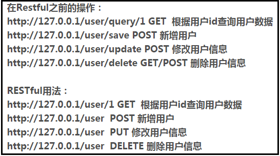

一次远程过程调用的流程即客户端发送一个请求到服务端，服务端根据请求信息进行处理后返回响应信息，客户端收到响应信息后结束。
参考博客：
https://www.jianshu.com/p/a72d226eef84
所以rpc是一个很宽泛的概念，比如http协议也是rpc的一种具体实现。json-rpc协议也是一种rpc的具体实现。其次，rpc不一定要走http请求，可能直接走tcp请求以此来获取更高的效率。例如rpc框架dubbo。
以dubbo框架为例。
如果按照五层协议划分网络，浏览网页是建立http协议，应用层上的，但是dubbo是基于socket实现，直接跳过应用层，直接调用tcp协议，在传输层实现。
mq生产者消费者是完全解耦的，并非直接调用过程，而是丢到了队列中。
1.rest面向资源
rest要求必须把所有的应用定义成为“resource”，然后只能针对资源做有限的四种操作。
参考博客：https://blog.csdn.net/qq_21383435/article/details/80032375
2.Rest风格介绍：接口路由名称一样，但是method不一样，例如通过POST请求来进行新增操作，通过GET请求来查询数据。满足这种风格，称为Restful风格请求。

参考博客：https://blog.csdn.net/chenxiaochan/article/details/73716617
3.JSON-RPC风格介绍
json-rpc和rest不一样的地方在于rpc是根据路由动词来的。
参考博客：https://blog.csdn.net/chen213wb/article/details/81747573